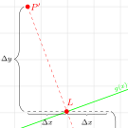
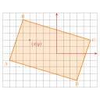
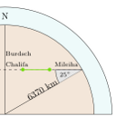

|
How to check if a point is inside of a polygon? |
Recent Posts all posts

|
How to check if two line segments intersect |
|  |
Reflecting a point over a line |
|  |
How to check if a point is inside a rectangle |
|  |
Sichtweite des Burdsch Chalifa |